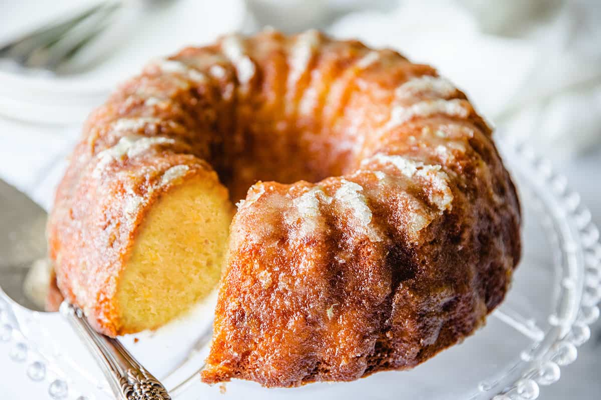

Orange Cake

Description
My mom gave me this orange cake recipe, and I can't make it often because I would eat the whole thing.
This is the best cake I have ever tasted. I hope it lasts more than a day at your house!
Ingridients
- 1 (15.25 ounce) package yellow cake mix
- 1 (3 ounce) package instant lemon pudding mix
- ¾ cup orange juice
- ½ cup vegetable oil
- 4 large eggs
- 1 teaspoon lemon extract
Steps
- Preheat the oven to 325 degrees F (165 degrees C). Grease a 10-inch Bundt pan.
- Make the cake: Stir cake mix and pudding mix together in a large bowl. Make a well in the center
and pour in orange juice, oil, eggs, and lemon extract. Beat on low speed with an electric mixer until
blended.
Scrape the sides of the bowl, then beat on medium speed for 4 minutes. Pour batter into the prepared pan.
- Bake in the preheated oven for 50 to 60 minutes. Let cool in pan for 10 minutes,
then turn out onto a wire rack and cool completely, about 20 more minutes.
- When the cake has cooled, make the glaze: Cook sugar, orange juice, and butter in a saucepan over medium
heat for 2 minutes.
- Transfer cake to a serving platter and drizzle glaze over top.